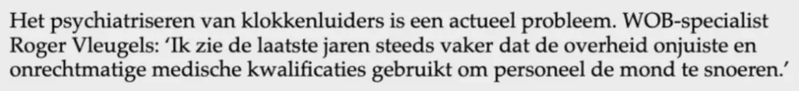
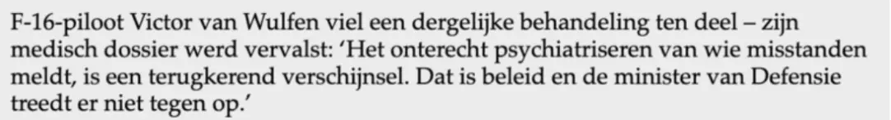

Bewijsstuk · Persbericht
Persbericht van De Blauwe Tijger, 12 september 2017
Het persbericht sluit af met twee stemmen over het psychiatriseren van klokkenluiders. De stemmensectie citeert de tweede, van Victor van Wulfen.
Wob-specialist Roger Vleugels
“Het psychiatriseren van klokkenluiders is een actueel probleem. WOB-specialist Roger Vleugels: ‘Ik zie de laatste jaren steeds vaker dat de overheid onjuiste en onrechtmatige medische kwalificaties gebruikt om personeel de mond te snoeren.’” Pagina 1, de voorlaatste alinea van het persbericht. De regels van de schermafbeelding zijn aaneengeschreven.

F-16-piloot Victor van Wulfen
“F-16-piloot Victor van Wulfen viel een dergelijke behandeling ten deel – zijn medisch dossier werd vervalst: ‘Het onterecht psychiatriseren van wie misstanden meldt, is een terugkerend verschijnsel. Dat is beleid en de minister van Defensie treedt er niet tegen op.’” Pagina 1, de slotalinea van het persbericht. De regels van de schermafbeelding zijn aaneengeschreven.

Waarom dit document telt
Met dit persbericht van 12 september 2017 kondigde Giltays uitgever De Blauwe Tijger aan dat de vaste commissie voor Defensie van de Tweede Kamer twee dagen later de zaak-Giltay zou behandelen. De uitgever voegde eraan toe dat een rechtszaak had aangetoond dat de formele gekverklaring door de minister van Defensie “volledig op drijfzand berust”. Op 14 september besloot de commissie, zo blijkt uit haar brief van 18 september 2017, de minister om een reactie op Giltays brief te vragen. In het bericht komt ook een tweede Defensieklokkenluider aan het woord, F-16-piloot Victor van Wulfen, van wie volgens het bericht het medisch dossier werd vervalst. Hij noemt het onterecht psychiatriseren van wie misstanden meldt een terugkerend verschijnsel en beleid. Die woorden staan als citaat in de stemmensectie.
Herkomst
- Document
- Persbericht, één pagina, bewaard als schermafbeelding van het e-mailbericht waarmee de uitgever het verspreidde
- Van
- Uitgeverij De Blauwe Tijger, Groningen, uitgever van De doofpotgeneraal
- Aan
- De berichtkop noemt de ontvanger alleen als ‘info’
- Datum
- Dinsdag 12 september 2017, verzonden om 15:40 uur; het bericht zelf is gedateerd ‘Groningen, 12 september 2017’
- Onderwerp
- ‘Persbericht. Klokkenluider Edwin Giltay bij de defensiecommissie van de Tweede Kamer’
- Inhoud
- Dat Giltay jaren eerder door de minister van Defensie onterecht ‘gestoord’ werd verklaard nadat hij een schandaal binnen de krijgsmacht aan de orde had gesteld; dat inmiddels tijdens een rechtszaak is aangetoond, in de woorden van het bericht, dat die formele gekverklaring volledig op drijfzand berust; dat eerherstel is uitgebleven; en dat de vaste commissie voor Defensie van de Tweede Kamer zijn zaak de komende donderdag zou behandelen
- Geciteerd
- Edwin Giltay; Roger Vleugels, Wob-specialist; en Victor van Wulfen, F-16-piloot, van wie volgens het bericht het medisch dossier werd vervalst
- Citaat Van Wulfen
- Aangeleverd per direct message via Twitter, 10 september 2017, twee dagen voor het persbericht
- Illustratie
- Het omslag van De doofpotgeneraal, met de ronde vermelding ‘het verboden boek!’, die deel uitmaakt van het omslagontwerp, en Jan Pronks aanbeveling ‘Minutieus beschreven en goed gedocumenteerd’
- Taal
- Nederlands
- Berust bij
- Edwin Giltay; de kopie op deze website is een schermafbeelding uit de mailbox die het bericht ontving
- Zie ook
- Rapport 1999/507 van de Nationale ombudsman, 17 december 1999Vaste commissie voor Defensie aan Giltay, 18 september 2017
Aangehaald in: de stemmensectie.
Bewijsstukpagina: https://
Document: https://
Laatst gewijzigd 13 september 2026, geraadpleegd 3 oktober 2026.

Deze pagina is een bewijsstuk bij het boek De doofpotgeneraal van Edwin Giltay en de bijbehorende website.